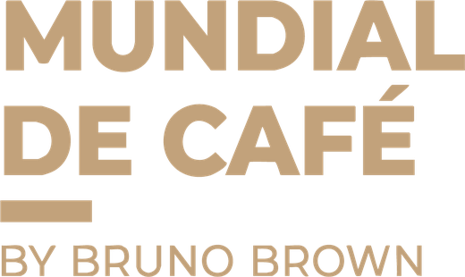
Cómo cargar tu beneficio en la app y cómo canjearlo en tu stand, paso a paso.
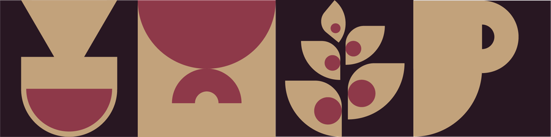
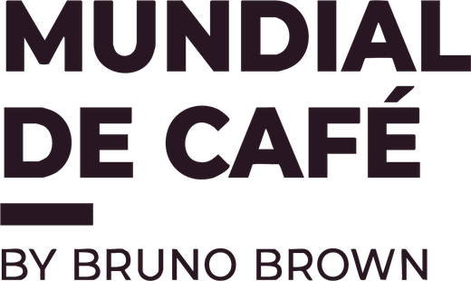
Cómo funcionaCada persona que entra al Mundial se registra en la app y recibe una billetera con los cupones de todas las marcas. No hace falta descargar nada: funciona en el navegador del celular.
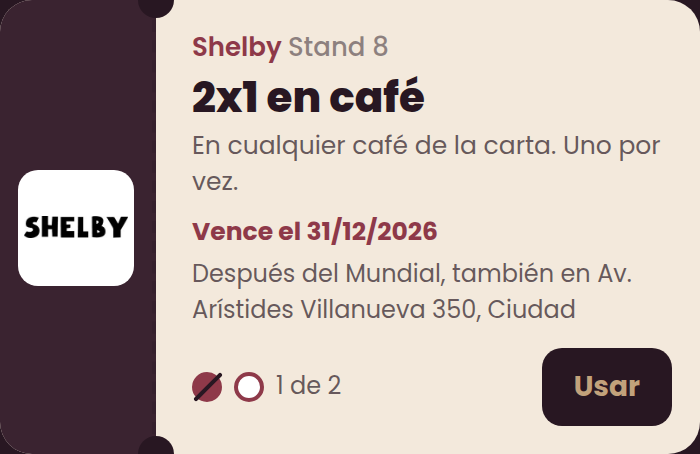
| Lo elegís vos | Lo define la organización |
|---|---|
| El beneficio y sus condiciones | Cuántas veces lo puede usar cada visitante |
| Tu logo | Tu código de caja de 4 números |
| Hasta cuándo vale y dónde se usa después del Mundial | Tu clave de acceso al panel |
Desde el panel cargás tu cupón y ves todos tus canjes. Funciona en el celular y en la compu.
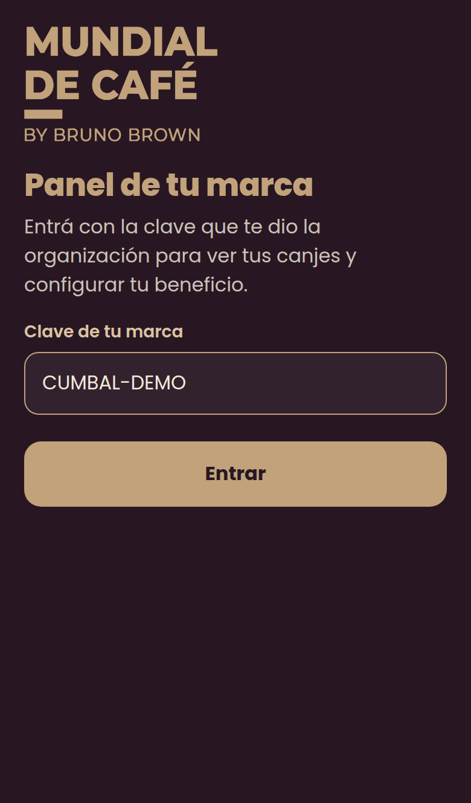
Completás todo una sola vez. Cuando lo enviás, se publica en la billetera de los visitantes.
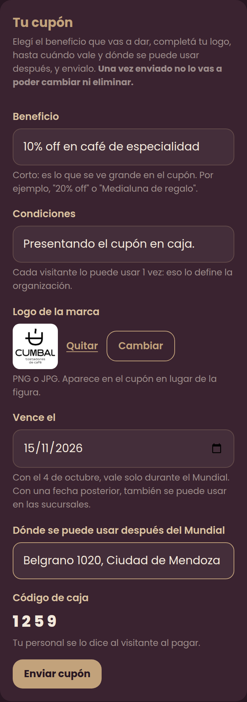
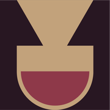
Después de enviar el cupón, tu panel queda como consulta: ves tu cupón publicado y cada canje en tiempo real.
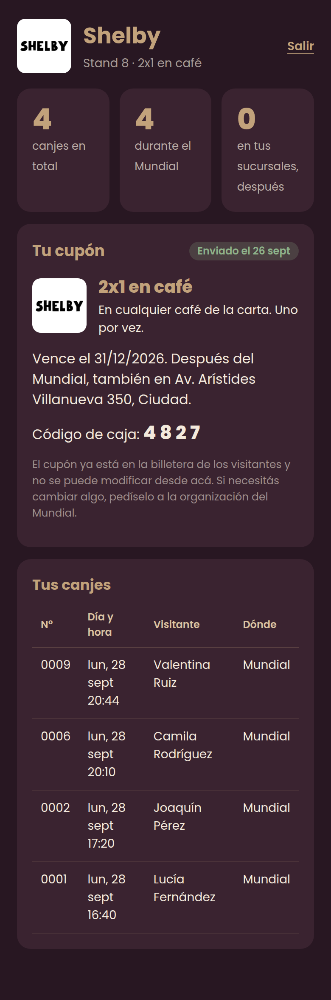
Compartí esta página con todo el personal que atiende tu stand y tus sucursales.
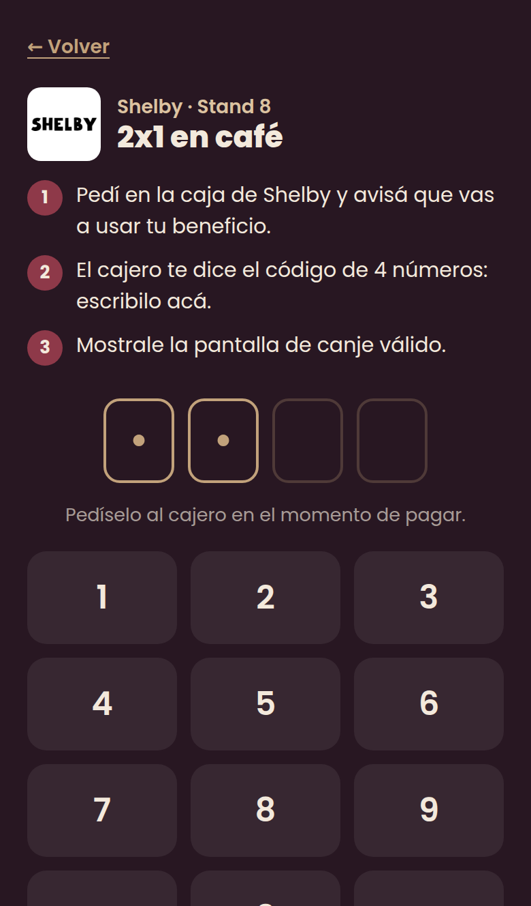
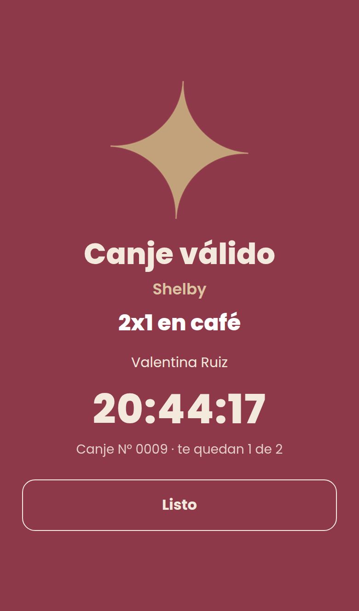
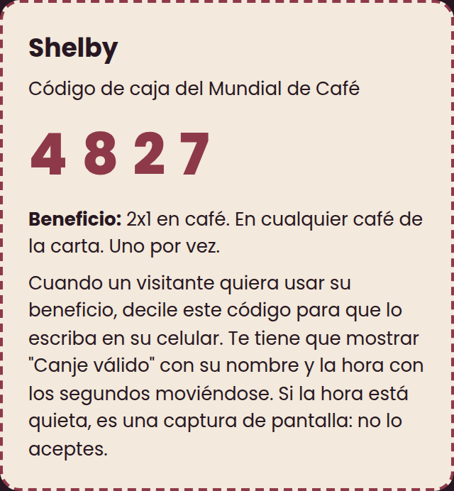
Confirmá que le dijiste el código de tu tarjeta. Después de 3 errores seguidos, la app lo hace esperar 1 minuto antes de volver a probar.
Es correcto: ya usó tu beneficio todas las veces permitidas.
El canje necesita internet en el celular del visitante. Si no tiene datos, sugerile el WiFi del evento.
Antes de enviarlo, sí. Después, pedíselo a la organización: pueden corregirlo o habilitarte para editarlo de nuevo.
Si pusiste una fecha de vencimiento posterior, el visitante canjea en tu sucursal igual que en el stand, con el mismo código. Esos canjes aparecen como "Sucursal".
No: cada visitante solo puede gastar sus propios usos, y cada canje queda registrado con su nombre y la hora.